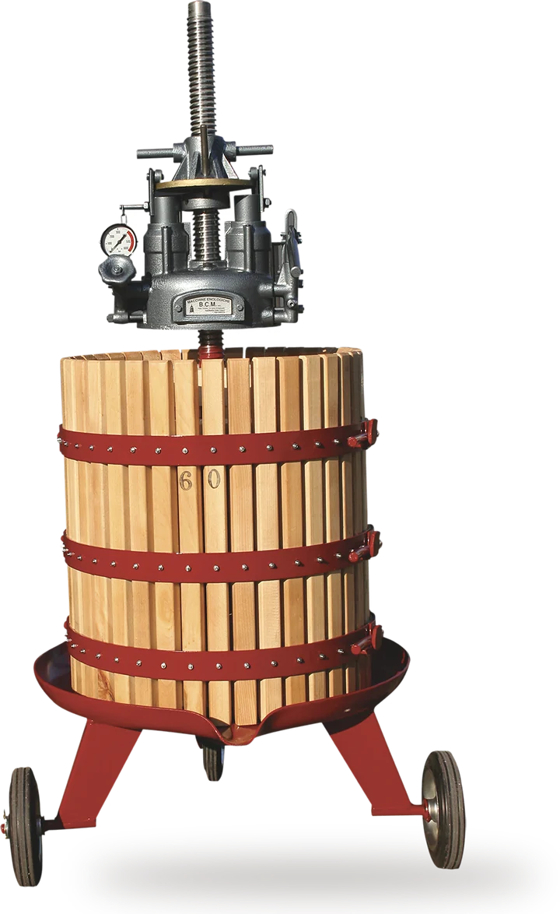
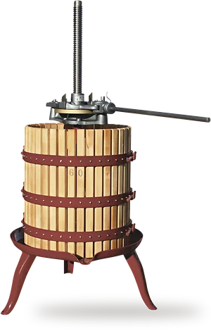
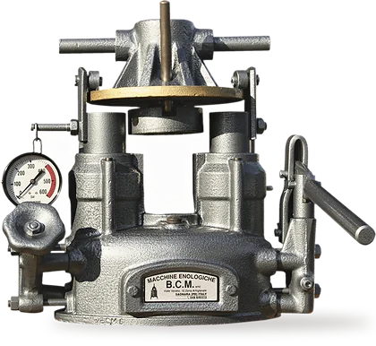
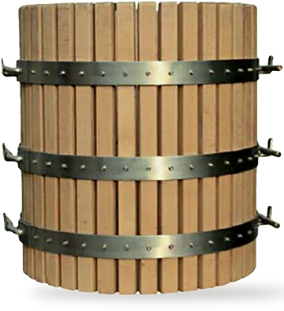
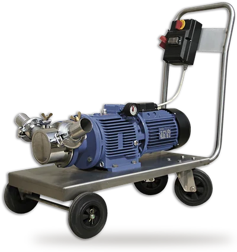
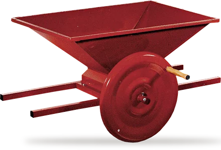
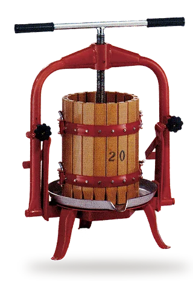
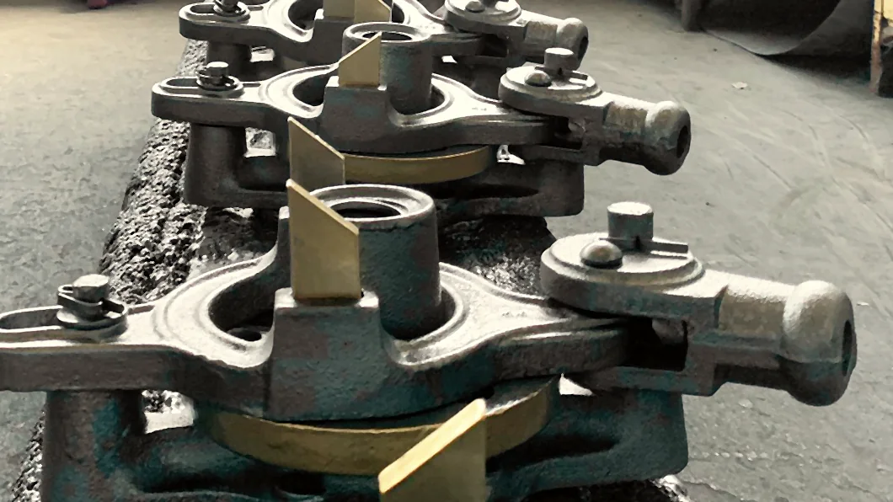
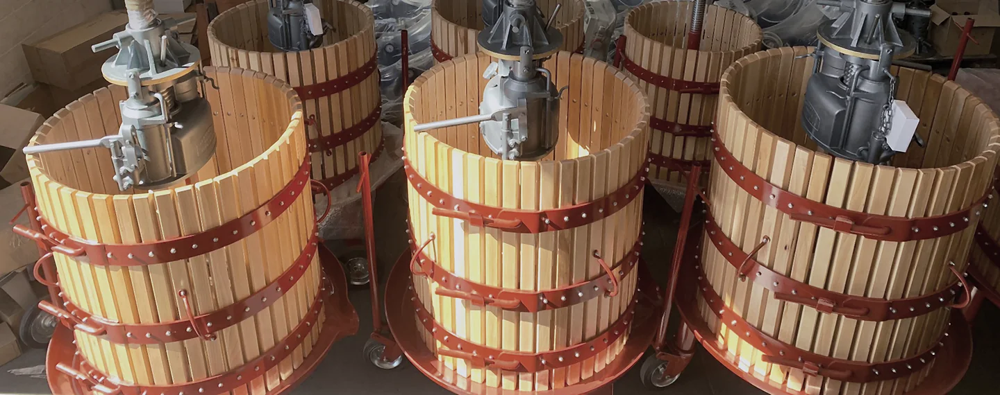

Torchi e martinetti, dal 1960
Faggio stagionato, perni forgiati a caldo, 400 atmosfere. Costruiti a Saonara, vicino a Padova, per le piccole e medie produzioni.
Per un preventivo: 049 640372 o info@bcmenologia.com

Torchio idraulico 60, carrellato
Attrezzatura per l’enologia, dalla pigiatura al travaso
Sei linee di macchine per la cantina, e i ricambi di ogni componente.
-

Torchi
Idraulici in 8 modelli da 45 a 90 cm, a cricco in 13 da 15 a 80 cm, a vite in 5. Listelli di faggio con bulloni passanti.
-

Martinetti DAVID
Il DAVID è progettato e brevettato da BCM negli anni 80, oggi marchio registrato. Cinque misure, da A50 a E90, fino a 400 atmosfere.
-

Gabbie
In faggio evaporato, in inox o in PVC, da 15 a 100 cm. A 3 o 4 cerchi, al posto delle vecchie ceste equivalenti.
-

Pompe e inverter
Volumex a girante in neoprene, struttura in inox AISI 304. Con il variatore, fino a 950 hl l’ora.
-

Pigiatrici
Pigiatrici e pigiadiraspatrici, manuali e a motore: da 500 a 1500 kg l’ora.
-

Presse per frutta
Pressafrutta, presse versatili e l’idropressa, che spreme con l’acqua dell’acquedotto.

Dal 1960, i torchi e i loro ricambi
BCM nasce nel 1960 con Marino Benetazzo e Mario Camerotto, tra famiglie che si conoscono. Negli anni 80 progetta e brevetta il martinetto idraulico DAVID, oggi marchio registrato costruito solo da BCM.
Di ogni macchina BCM tiene i ricambi e la manutenzione di ogni singolo componente, da oltre 30 anni: compatibilità con il passato.
- In fiera
- SIMEI 2009, 2011, 2015 e 2019
- Spedizioni
- In tutto il mondo
Piccola e seria azienda artigianale
Viale Veneto 10-12, zona artigianale
35020 Saonara (PD)
Apri la mappa
Dal lunedì al venerdì, 8-18
